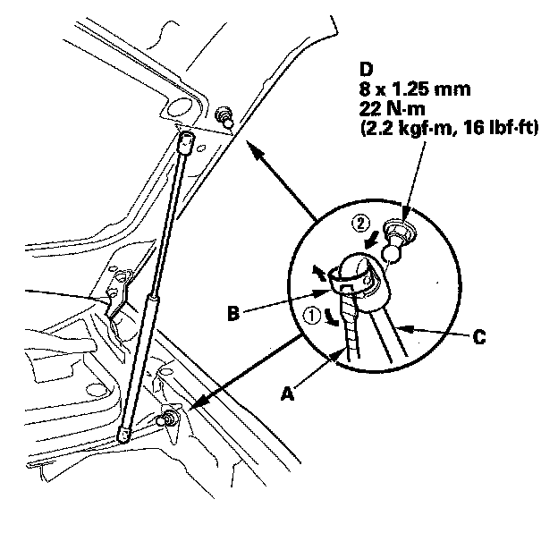
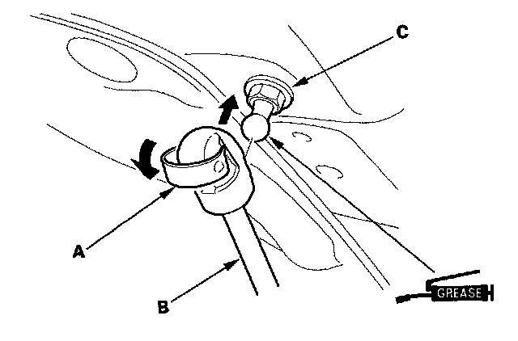

Hood Shock / Support: Service and Repair
Hood Support Strut Replacement
1. With the help of an assistant, use a flat-tip screwdriver (A) to pry the support strut clips (B) of the support strut (C) on the hood and body, then release the support strut from the pivot bolts (D). Do not remove the clips from the support strut.
NOTE: Use eye protection when doing this procedure.
2. Apply multipurpose grease to each pivot.

3. Set the clips (A) on the original position, then reattach the support strut (B) on the pivot bolts (C) by pushing on the support strut.